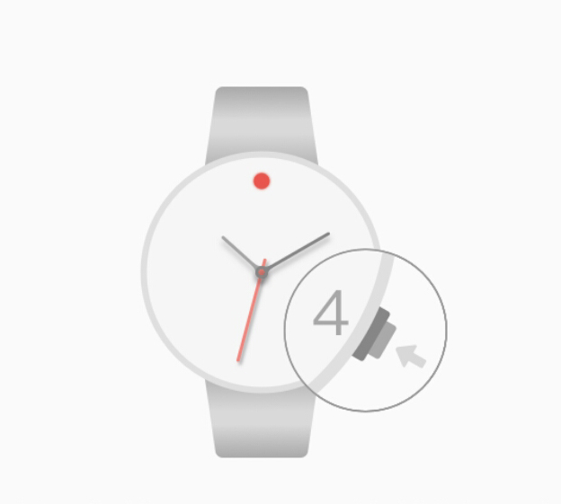

查看狀態：使用過程中按一下4:00位按鍵可查看藍牙狀態，12:00位燈閃爍2次說明手錶沒有與手機連接；12:00位燈常亮2秒左右說明手錶與手機已連接，如果燈不閃也不亮說明手錶藍牙沒有打開。
開啟藍牙：手錶處於節電模式或藍牙關閉狀態下，可長按4:00點位按鍵2秒左右打開。
掛斷電話：手錶與手機連接狀態下，當有電話提醒時，按一下4:00位按鍵可以掛斷電話。
遙控拍照：手錶與手機連接狀態下，長按4:00點位按鍵2秒左右進入遙控拍照模式，然後打開手機相機，按一下4:00點位按鍵或翻腕可控制拍照。
手錶會自動同步手機時間，如發現手錶指針指示不精準，可以拉出表冠，旋轉表冠調節時針、分針；如手錶有小錶盤，拉出表冠后按2:00位按鍵可控制小錶盤指針轉動；將時、分和小指針都指向12:00後，推回表冠，指針自動追到正確時間。
常見問題解答：
●手機時間更改後手錶沒有自動更改時間
將手機app打開置於前台，並保證手錶與APP是連接狀態，等候10秒左右，手錶會自動校時與手機時間一致。如需測試自動校時功能，請在APP與手錶連接狀態下，手動修改手機時間或時區，手錶會自動追針校時。
●與蘋果手機連接，沒有提醒或不能遙控拍照。是手表沒有與蘋果手機藍牙配對。
開啟一下手機飛行模式，10秒左右再關閉。重新連接手錶後如現象依然存在，長按手錶4:00位按鍵7秒以上重啟手錶。
●手錶與安卓手機連接但沒有配對。
重啟手機藍牙重新搜索連接。
●手錶與安卓手機配對上不能遙控拍照。
進入藍牙設備詳情查看該設備是否勾選為輸入設備，如已勾選，打開手機相機更改拍照按鍵為音量鍵控製或點按拍照。 （部分安卓機型不支持輸入設備。）
●手錶連上安卓手機沒有提醒。
檢查手機app來電提醒、消息提醒開關是否開啟；
將手機app添加進手機信任列表（部分手機安全助手會屏蔽）；
檢查手機通知欄提醒開關是否對手機app開啟。
●其他異常情況，如藍牙燈持續常亮或持續閃爍等。
長按手錶4:00位按鍵7秒以上重啟手錶；
操作無效則打開手錶後蓋按一下復位按鍵。